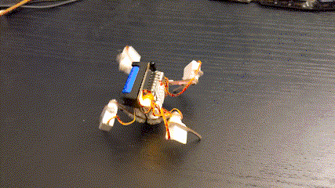

Just Programmed¶
Published on 2023-03-01 in Wee Bug.
I have finally “just” programmed it. It took me some time, because I had the pins on the left side of the robot completely mixed up, and I wasted time trying to guess which one is which (and which one needs reversing the servo) purely by watching them move while walking, which is, in hindsight, pretty stupid. Moving the servos one at a time worked much better. It’s now walking, and has the code needed for receiving commands.

Now I “just” need to add the code for reading the tv remote codes, and/or the gesture sensor, and I should be good.